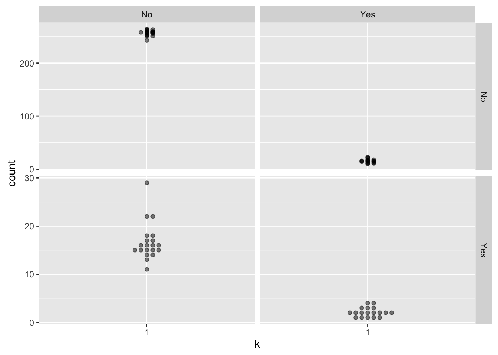

I’m writing this up because Amelia McNamara is working on this really cool project, rebooting the ISLR labs using the tidyverse. This is a meagre attempt to pitch in.
The first to answer the call was David Robinson, who, of course, answered the question comprehensively in less time than it would take me to even ponder the question over a cup of coffee.
I will look at a slightly different question, building on Amelia’s and David’s foundation with an eye on visualization. I know the stuff on cross-validation is coming later in the book, I hope this will be OK.
library("ISLR")
library("class")
library("assertthat")
Attaching package: 'assertthat'The following object is masked from 'package:tibble':
has_namelibrary("tidyverse")Loading tidyverse: readrConflicts with tidy packages -------------------------------------------------------------filter(): dplyr, stats
has_name(): tibble, assertthat
lag(): dplyr, stats
partial(): purrr, pryrlibrary("modelr")
library("broom")
library("ggbeeswarm")
library("viridis")Following Amelia, let’s look at the ISLR Caravan example (pp. 164–167).
The goal is to apply KNN to the Caravan dataset from the ISLR package. The first thing I’m going to do is make a copy of it as a tibble, then see what we’ve got.
caravan <-
as_tibble(ISLR::Caravan) %>%
print()# A tibble: 5,822 × 86
MOSTYPE MAANTHUI MGEMOMV MGEMLEEF MOSHOOFD MGODRK MGODPR MGODOV MGODGE MRELGE MRELSA
* <dbl> <dbl> <dbl> <dbl> <dbl> <dbl> <dbl> <dbl> <dbl> <dbl> <dbl>
1 33 1 3 2 8 0 5 1 3 7 0
2 37 1 2 2 8 1 4 1 4 6 2
3 37 1 2 2 8 0 4 2 4 3 2
4 9 1 3 3 3 2 3 2 4 5 2
5 40 1 4 2 10 1 4 1 4 7 1
6 23 1 2 1 5 0 5 0 5 0 6
7 39 2 3 2 9 2 2 0 5 7 2
8 33 1 2 3 8 0 7 0 2 7 2
9 33 1 2 4 8 0 1 3 6 6 0
10 11 2 3 3 3 3 5 0 2 7 0
# ... with 5,812 more rows, and 75 more variables: MRELOV <dbl>, MFALLEEN <dbl>,
# MFGEKIND <dbl>, MFWEKIND <dbl>, MOPLHOOG <dbl>, MOPLMIDD <dbl>, MOPLLAAG <dbl>,
# MBERHOOG <dbl>, MBERZELF <dbl>, MBERBOER <dbl>, MBERMIDD <dbl>, MBERARBG <dbl>,
# MBERARBO <dbl>, MSKA <dbl>, MSKB1 <dbl>, MSKB2 <dbl>, MSKC <dbl>, MSKD <dbl>,
# MHHUUR <dbl>, MHKOOP <dbl>, MAUT1 <dbl>, MAUT2 <dbl>, MAUT0 <dbl>, MZFONDS <dbl>,
# MZPART <dbl>, MINKM30 <dbl>, MINK3045 <dbl>, MINK4575 <dbl>, MINK7512 <dbl>,
# MINK123M <dbl>, MINKGEM <dbl>, MKOOPKLA <dbl>, PWAPART <dbl>, PWABEDR <dbl>,
# PWALAND <dbl>, PPERSAUT <dbl>, PBESAUT <dbl>, PMOTSCO <dbl>, PVRAAUT <dbl>,
# PAANHANG <dbl>, PTRACTOR <dbl>, PWERKT <dbl>, PBROM <dbl>, PLEVEN <dbl>,
# PPERSONG <dbl>, PGEZONG <dbl>, PWAOREG <dbl>, PBRAND <dbl>, PZEILPL <dbl>,
# PPLEZIER <dbl>, PFIETS <dbl>, PINBOED <dbl>, PBYSTAND <dbl>, AWAPART <dbl>,
# AWABEDR <dbl>, AWALAND <dbl>, APERSAUT <dbl>, ABESAUT <dbl>, AMOTSCO <dbl>,
# AVRAAUT <dbl>, AAANHANG <dbl>, ATRACTOR <dbl>, AWERKT <dbl>, ABROM <dbl>,
# ALEVEN <dbl>, APERSONG <dbl>, AGEZONG <dbl>, AWAOREG <dbl>, ABRAND <dbl>,
# AZEILPL <dbl>, APLEZIER <dbl>, AFIETS <dbl>, AINBOED <dbl>, ABYSTAND <dbl>,
# Purchase <fctr>Yikes! That’s a lot of variables. Following Amelia, let’s standardise the numeric variables of the dataframe.
caravan_standard <-
caravan %>%
select(-Purchase) %>%
dmap(~as.vector(scale(.x))) %>%
print() dmap() is deprecated. Please use the new colwise family in dplyr.
E.g., summarise_all(), mutate_all(), etc.# A tibble: 5,822 × 85
MOSTYPE MAANTHUI MGEMOMV MGEMLEEF MOSHOOFD MGODRK MGODPR
<dbl> <dbl> <dbl> <dbl> <dbl> <dbl> <dbl>
1 0.68084775 -0.2725565 0.4066617 -1.21685949 0.7793384 -0.6942510 0.2174254
2 0.99221162 -0.2725565 -0.8594262 -1.21685949 0.7793384 0.3025256 -0.3653787
3 0.99221162 -0.2725565 -0.8594262 -1.21685949 0.7793384 -0.6942510 -0.3653787
4 -1.18733547 -0.2725565 0.4066617 0.01075374 -0.9708962 1.2993023 -0.9481828
5 1.22573452 -0.2725565 1.6727497 -1.21685949 1.4794323 0.3025256 -0.3653787
6 -0.09756193 -0.2725565 -0.8594262 -2.44447272 -0.2708024 -0.6942510 0.2174254
7 1.14789355 2.1914562 0.4066617 -1.21685949 1.1293853 1.2993023 -1.5309868
8 0.68084775 -0.2725565 -0.8594262 0.01075374 0.7793384 -0.6942510 1.3830335
9 0.68084775 -0.2725565 -0.8594262 1.23836697 0.7793384 -0.6942510 -2.1137909
10 -1.03165354 2.1914562 0.4066617 0.01075374 -0.9708962 2.2960789 0.2174254
# ... with 5,812 more rows, and 78 more variables: MGODOV <dbl>, MGODGE <dbl>,
# MRELGE <dbl>, MRELSA <dbl>, MRELOV <dbl>, MFALLEEN <dbl>, MFGEKIND <dbl>,
# MFWEKIND <dbl>, MOPLHOOG <dbl>, MOPLMIDD <dbl>, MOPLLAAG <dbl>, MBERHOOG <dbl>,
# MBERZELF <dbl>, MBERBOER <dbl>, MBERMIDD <dbl>, MBERARBG <dbl>, MBERARBO <dbl>,
# MSKA <dbl>, MSKB1 <dbl>, MSKB2 <dbl>, MSKC <dbl>, MSKD <dbl>, MHHUUR <dbl>,
# MHKOOP <dbl>, MAUT1 <dbl>, MAUT2 <dbl>, MAUT0 <dbl>, MZFONDS <dbl>, MZPART <dbl>,
# MINKM30 <dbl>, MINK3045 <dbl>, MINK4575 <dbl>, MINK7512 <dbl>, MINK123M <dbl>,
# MINKGEM <dbl>, MKOOPKLA <dbl>, PWAPART <dbl>, PWABEDR <dbl>, PWALAND <dbl>,
# PPERSAUT <dbl>, PBESAUT <dbl>, PMOTSCO <dbl>, PVRAAUT <dbl>, PAANHANG <dbl>,
# PTRACTOR <dbl>, PWERKT <dbl>, PBROM <dbl>, PLEVEN <dbl>, PPERSONG <dbl>,
# PGEZONG <dbl>, PWAOREG <dbl>, PBRAND <dbl>, PZEILPL <dbl>, PPLEZIER <dbl>,
# PFIETS <dbl>, PINBOED <dbl>, PBYSTAND <dbl>, AWAPART <dbl>, AWABEDR <dbl>,
# AWALAND <dbl>, APERSAUT <dbl>, ABESAUT <dbl>, AMOTSCO <dbl>, AVRAAUT <dbl>,
# AAANHANG <dbl>, ATRACTOR <dbl>, AWERKT <dbl>, ABROM <dbl>, ALEVEN <dbl>,
# APERSONG <dbl>, AGEZONG <dbl>, AWAOREG <dbl>, ABRAND <dbl>, AZEILPL <dbl>,
# APLEZIER <dbl>, AFIETS <dbl>, AINBOED <dbl>, ABYSTAND <dbl>Now, let’s follow David by using k-fold cross-validation.
So, I sat here staring at the screen for twenty minutes, because I could not see how to go forward with modelr’s framework for cross-validation using knn(); I could not see how to get there from here. So I went to run some errands, and a solution appeared (as happens from time to time).
The problem (I think) is that the API to the knn() function is different than for the lm() function. My solution is to back-up, and to write a function to wrap to the knn() function so that the API will be “close enough”. As I am starting to learn, “write a function” seems to be the way out of a lot of R pickles (and into others).
To act like lm(), we need to keep the target variable in a data-frame alongside the predictor variables. So let’s do that.
caravan_standard_new <-
caravan %>%
dmap_if(is.numeric, ~as.vector(scale(.x))) %>%
print() dmap_if() is deprecated. Please use the new colwise family in dplyr.
E.g., summarise_if(), mutate_if(), etc.dmap() is deprecated. Please use the new colwise family in dplyr.
E.g., summarise_all(), mutate_all(), etc.# A tibble: 5,822 × 86
MOSTYPE MAANTHUI MGEMOMV MGEMLEEF MOSHOOFD MGODRK MGODPR
* <dbl> <dbl> <dbl> <dbl> <dbl> <dbl> <dbl>
1 0.68084775 -0.2725565 0.4066617 -1.21685949 0.7793384 -0.6942510 0.2174254
2 0.99221162 -0.2725565 -0.8594262 -1.21685949 0.7793384 0.3025256 -0.3653787
3 0.99221162 -0.2725565 -0.8594262 -1.21685949 0.7793384 -0.6942510 -0.3653787
4 -1.18733547 -0.2725565 0.4066617 0.01075374 -0.9708962 1.2993023 -0.9481828
5 1.22573452 -0.2725565 1.6727497 -1.21685949 1.4794323 0.3025256 -0.3653787
6 -0.09756193 -0.2725565 -0.8594262 -2.44447272 -0.2708024 -0.6942510 0.2174254
7 1.14789355 2.1914562 0.4066617 -1.21685949 1.1293853 1.2993023 -1.5309868
8 0.68084775 -0.2725565 -0.8594262 0.01075374 0.7793384 -0.6942510 1.3830335
9 0.68084775 -0.2725565 -0.8594262 1.23836697 0.7793384 -0.6942510 -2.1137909
10 -1.03165354 2.1914562 0.4066617 0.01075374 -0.9708962 2.2960789 0.2174254
# ... with 5,812 more rows, and 79 more variables: MGODOV <dbl>, MGODGE <dbl>,
# MRELGE <dbl>, MRELSA <dbl>, MRELOV <dbl>, MFALLEEN <dbl>, MFGEKIND <dbl>,
# MFWEKIND <dbl>, MOPLHOOG <dbl>, MOPLMIDD <dbl>, MOPLLAAG <dbl>, MBERHOOG <dbl>,
# MBERZELF <dbl>, MBERBOER <dbl>, MBERMIDD <dbl>, MBERARBG <dbl>, MBERARBO <dbl>,
# MSKA <dbl>, MSKB1 <dbl>, MSKB2 <dbl>, MSKC <dbl>, MSKD <dbl>, MHHUUR <dbl>,
# MHKOOP <dbl>, MAUT1 <dbl>, MAUT2 <dbl>, MAUT0 <dbl>, MZFONDS <dbl>, MZPART <dbl>,
# MINKM30 <dbl>, MINK3045 <dbl>, MINK4575 <dbl>, MINK7512 <dbl>, MINK123M <dbl>,
# MINKGEM <dbl>, MKOOPKLA <dbl>, PWAPART <dbl>, PWABEDR <dbl>, PWALAND <dbl>,
# PPERSAUT <dbl>, PBESAUT <dbl>, PMOTSCO <dbl>, PVRAAUT <dbl>, PAANHANG <dbl>,
# PTRACTOR <dbl>, PWERKT <dbl>, PBROM <dbl>, PLEVEN <dbl>, PPERSONG <dbl>,
# PGEZONG <dbl>, PWAOREG <dbl>, PBRAND <dbl>, PZEILPL <dbl>, PPLEZIER <dbl>,
# PFIETS <dbl>, PINBOED <dbl>, PBYSTAND <dbl>, AWAPART <dbl>, AWABEDR <dbl>,
# AWALAND <dbl>, APERSAUT <dbl>, ABESAUT <dbl>, AMOTSCO <dbl>, AVRAAUT <dbl>,
# AAANHANG <dbl>, ATRACTOR <dbl>, AWERKT <dbl>, ABROM <dbl>, ALEVEN <dbl>,
# APERSONG <dbl>, AGEZONG <dbl>, AWAOREG <dbl>, ABRAND <dbl>, AZEILPL <dbl>,
# APLEZIER <dbl>, AFIETS <dbl>, AINBOED <dbl>, ABYSTAND <dbl>, Purchase <fctr>Now, let’s work on the wrapper for the knn() function.
#' gets \code{class::knn()} to play nice with modelr
#'
#' @param train dataframe, with (scaled) numeric columns for predictors
#' and a factor column for the target
#' @param test dataframe, with (scaled) numeric columns for predictors
#' and a factor column for the target
#' @param str_target string, indicated target column of test and train
#' dataframe
#' @param ... arguments passed on to \code{class::knn()}
#'
#' @return like \code{class::knn()}, factor of classifications of test set.
#' \code{doubt} will be returned as \code{NA}.
#'
knn_new <- function(train, test, str_target, ...){
# lets us use "resample"
train <- as.data.frame(train)
test <- as.data.frame(test)
# yes, I should be able to do this using NSE, but I forgot...
assertthat::assert_that(str_target %in% names(train))
assertthat::assert_that(str_target %in% names(test)) # may not need this
# get target vector for train dataframe
target_train <- train[[str_target]]
# remove target column from both dataframes
train[[str_target]] <- NULL
test[[str_target]] <- NULL
class::knn(train = train, test = test, cl = target_train, ...)
}Let’s see if this thing works…
Using the standard method:
test_caravan = caravan_standard %>%
slice(1:1000)
train_caravan = caravan_standard %>%
slice(1001:5822)
Purchase = caravan %>%
select(Purchase)
test_purchase = Purchase %>%
slice(1:1000) %>%
.$Purchase
train_purchase = Purchase %>%
slice(1001:5822) %>%
.$Purchaseset.seed(1)
knn_pred = knn(train_caravan, test_caravan, train_purchase, k=1)
mean(test_purchase != knn_pred) # KNN error rate[1] 0.118mean(test_purchase != "No") [1] 0.059Now, let’s try with the “new” function:
test_caravan_new = caravan_standard_new %>%
slice(1:1000)
train_caravan_new = caravan_standard_new %>%
slice(1001:5822)
set.seed(1)
knn_pred_new = knn_new(train_caravan_new, test_caravan_new, "Purchase", k=1)
mean(test_purchase != knn_pred_new) # KNN error rate[1] 0.118mean(test_purchase != "No") [1] 0.059Promising…. just to make (more) sure:
all(knn_pred == knn_pred_new)[1] TRUEWhew! Next let’s use modelr to do some cross-validations:
I suspect I am doing something bad here by not requiring that the proportions of the levels of the response variable are consistent among the train and test sets. I’ll leave that as an exercise for later.
# more hackery
get_resample_column <- function(df, str_var){
df <- as.data.frame(df)
df[[str_var]]
}
caravan_summary <-
caravan_standard_new %>%
crossv_kfold(k = 20) %>%
mutate(
pred = map2(train, test, knn_new, "Purchase", k = 1),
resp = map(test, get_resample_column, "Purchase")
) %>%
unnest(pred, resp) %>%
group_by(.id, pred, resp) %>%
summarise(count = n()) %>%
print()Source: local data frame [78 x 4]
Groups: .id, pred [?]
.id pred resp count
<chr> <fctr> <fctr> <int>
1 01 No No 259
2 01 No Yes 14
3 01 Yes No 16
4 01 Yes Yes 3
5 02 No No 258
6 02 No Yes 18
7 02 Yes No 14
8 02 Yes Yes 2
9 03 No No 251
10 03 No Yes 23
# ... with 68 more rowsAt this point, we could visualize the confusion matrix over all of the cross-validations.
caravan_summary %>%
mutate(k = "1") %>%
ggplot(aes(x = k, y = count)) +
geom_beeswarm(alpha = 0.5) +
facet_grid(pred ~ resp, scales = "free")
I don’t know if such a visualization is a useful thing or not - there are doubtless things that can be done to make it more useful, but this may revealed (to me at least) only with coffee. At the very least, I ought to label the facet axes to show which is prediction and which is response.
This method can be extended to looking at different values of \(k\), as well. I will have to get to that later.
devtools::session_info()Session info ---------------------------------------------------------------------------- setting value
version R version 3.3.1 (2016-06-21)
system x86_64, darwin13.4.0
ui RStudio (1.0.44)
language (EN)
collate en_US.UTF-8
tz America/Chicago
date 2016-12-07 Packages -------------------------------------------------------------------------------- package * version date source
assertthat * 0.1 2013-12-06 CRAN (R 3.3.0)
backports 1.0.4 2016-10-24 cran (@1.0.4)
beeswarm 0.2.3 2016-04-25 CRAN (R 3.3.0)
broom * 0.4.1 2016-06-24 cran (@0.4.1)
class * 7.3-14 2015-08-30 CRAN (R 3.3.1)
codetools 0.2-14 2015-07-15 CRAN (R 3.3.1)
colorspace 1.2-6 2015-03-11 CRAN (R 3.3.0)
DBI 0.5-1 2016-09-10 CRAN (R 3.3.0)
devtools * 1.12.0.9000 2016-11-21 Github (hadley/devtools@2e3c4b6)
digest 0.6.10 2016-08-02 cran (@0.6.10)
dplyr * 0.5.0 2016-06-24 cran (@0.5.0)
evaluate 0.10 2016-10-11 cran (@0.10)
foreign 0.8-66 2015-08-19 CRAN (R 3.3.1)
ggbeeswarm * 0.5.0 2016-02-21 CRAN (R 3.3.0)
ggplot2 * 2.1.0 2016-03-01 CRAN (R 3.3.0)
gridExtra 2.2.1 2016-02-29 CRAN (R 3.3.0)
gtable 0.2.0 2016-02-26 CRAN (R 3.3.0)
htmlDocumentIJL 0.0.0.9000 2016-09-04 local
htmltools 0.3.5 2016-03-21 CRAN (R 3.3.0)
htmlwidgets 0.6 2016-02-25 CRAN (R 3.3.0)
ISLR * 1.0 2013-06-11 CRAN (R 3.3.0)
jsonlite 1.1 2016-09-14 CRAN (R 3.3.0)
knitr * 1.15.1 2016-11-22 cran (@1.15.1)
labeling 0.3 2014-08-23 CRAN (R 3.3.0)
lattice 0.20-33 2015-07-14 CRAN (R 3.3.1)
lazyeval 0.2.0.9000 2016-09-22 Github (hadley/lazyeval@c155c3d)
listviewer * 1.0 2016-06-15 CRAN (R 3.3.0)
magrittr * 1.5 2014-11-22 CRAN (R 3.3.0)
memoise 1.0.0 2016-01-29 CRAN (R 3.3.0)
mnormt 1.5-4 2016-03-09 cran (@1.5-4)
modelr * 0.1.0 2016-08-31 CRAN (R 3.3.0)
munsell 0.4.3 2016-02-13 CRAN (R 3.3.0)
nlme 3.1-128 2016-05-10 CRAN (R 3.3.1)
pkgbuild 0.0.0.9000 2016-11-21 Github (r-pkgs/pkgbuild@65eace0)
pkgload 0.0.0.9000 2016-11-21 Github (r-pkgs/pkgload@def2b10)
plyr 1.8.4 2016-06-08 cran (@1.8.4)
pryr * 0.1.2 2015-06-20 CRAN (R 3.3.0)
psych 1.6.9 2016-09-17 CRAN (R 3.3.0)
purrr * 0.2.2.9000 2016-11-21 Github (hadley/purrr@5360143)
R6 2.2.0 2016-10-05 cran (@2.2.0)
Rcpp 0.12.8 2016-11-17 cran (@0.12.8)
readr * 1.0.0 2016-08-03 CRAN (R 3.3.0)
reshape2 1.4.2 2016-10-22 CRAN (R 3.3.1)
rmarkdown 1.2.9000 2016-12-01 Github (rstudio/rmarkdown@de08391)
rprojroot 1.1 2016-10-29 cran (@1.1)
rsconnect 0.5 2016-10-17 CRAN (R 3.3.1)
rstudioapi 0.6 2016-06-27 CRAN (R 3.3.0)
scales 0.4.0 2016-02-26 CRAN (R 3.3.0)
stringi 1.1.2 2016-10-01 CRAN (R 3.3.0)
stringr 1.1.0 2016-08-19 CRAN (R 3.3.0)
tibble * 1.2 2016-08-26 CRAN (R 3.3.0)
tidyr * 0.6.0.9000 2016-09-07 Github (hadley/tidyr@3c9335b)
tidyverse * 0.0.0.9000 2016-09-07 Github (hadley/tidyverse@6ca05a7)
user2016docdemo * 0.0.0.9000 2016-09-06 local
utilrSE * 0.1.99 2016-11-15 local
vipor 0.4.3 2016-07-27 CRAN (R 3.3.0)
viridis * 0.3.4 2016-03-12 CRAN (R 3.3.0)
withr 1.0.2 2016-06-20 CRAN (R 3.3.0)
yaml 2.1.14 2016-11-12 cran (@2.1.14)